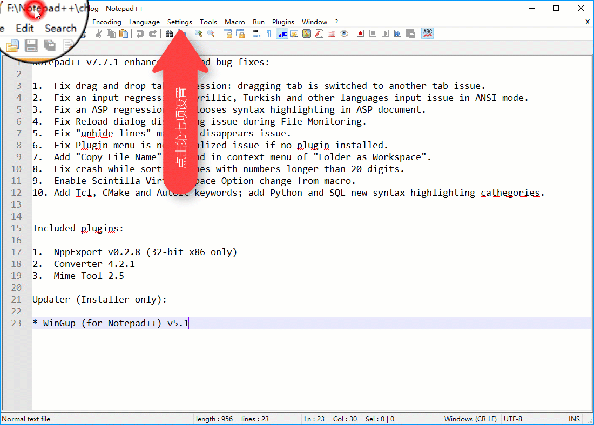
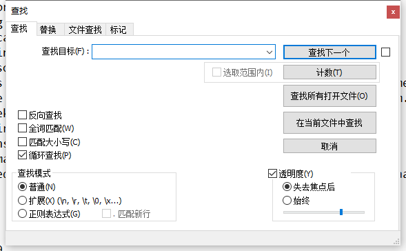
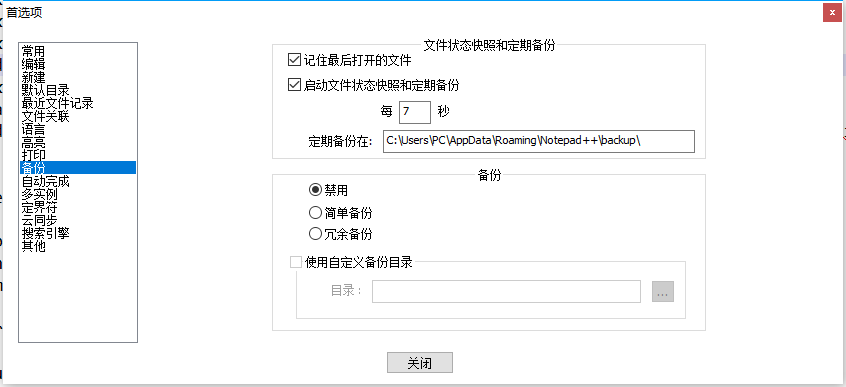
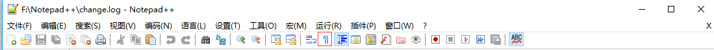

Notepad++
软件简介
Notepad++ 是 Windows 操作系统下的文本编辑器，支持多国语言、多种编码、多种编程语言的高亮和补全。它的 logo 也十分可爱，是一只变色龙（）
其功能比其他许多编辑软件强大许多，打开大文件时更加稳定，不断撤销不会出问题。关闭时也不需要保存，它会自动为你保存在缓冲区中。（可能需要配置）而且，它十分小巧，只有 10MB+，甚至可以放在 U 盘中随身携带。
下载与安装
参见 Getting started | Notepad++ User Manual。
更改界面语言

语言改完了，就可以随心所欲地魔改编辑器啦！
初级玩法
这里主要讲一些基础和特色功能。
查找与替换
依次单击「（菜单栏）搜索」->「查找」（快捷键 CTRL+F）即可打开「查找」页面（如下图）。

依次单击「（菜单栏）搜索」->「替换」（快捷键 CTRL+H）即可打开「替换」页面（如下图）。

查找、替换之间其实是一个窗口，单击上面的标签页就可以完成切换。
其功能与普通编辑器大同小异，但是支持更多，如：
- 严格匹配或大小写匹配等
- 跨文档匹配
- 转义字符，如'\r'，'\n'。
- 正则表达式
- 计数
定期备份

有了这个功能，就可以不用费心地担心意外情况代码丢失啦！
但是，这个功能只是为你的文件拍了一个快照，并没有真正保存，所以还是建议要有良好的保存习惯。或者说可以去自带插件商店安装 "Auto Save" 插件（详见 高级玩法 -> 插件，下同）
书签功能
在你需要的行按 Ctrl+F2 即可设放置/取消书签，放置过书签的行前段有一个蓝色圆点。
按 F2 可以定位到下一个书签。
如果你抱怨不方便，可以去自带插件商店安装 "Bookmarks" 插件
代码高亮
右击左下角的 "XXX file"，可以选择许多种语言高亮，C、C++、PASCAL、Markdown 等任你挑选。你甚至可以自己定义高亮！
如果你认为每一次打开文件都要更改高亮很麻烦，可以在「设置 -> 首选项 -> 新建 -> 默认语言」中修改默认高亮。
需要渲染 Markdown 的，可以去插件商店安装 "Markdown Viewer"，还有更多类似插件等着你！
显示所有字符

点击红框所圈的按钮，就可以非（za）常（luan）清（wu）晰（zhang）地显示出「空格」、「TAB」、「换行」等原来不可见字符。
自动识别文件编码与换行符
Notepad++ 可以自动识别当前文件编码是 UTF-8 还是 GB2312 甚至其他。再也不用担心被 锟斤拷 抡死或被 烫烫烫 烫死了。
如果要使用不同的编码浏览文章，请依次单击「（菜单顶栏）编码」->「使用 XXX 编码」。如果想给文件换一个字符编码，请依次单击「（菜单顶栏）编码」->「转为 XXX 编码」。
它还可以自动识别换行符是 CR、LF 或 CRLF。不用担心下载下来的数据被吞换行。
在底部信息栏，你可以看到 "Windows(CR LF)" 等字样，这就是当前文件的换行符。右击它，可以改变当前文件换行符。此操作配合「显示所有字符」更直观哟！
高级玩法
这个就适用于需求较高的用户。
宏
宏可以帮助你完成许多重复的工作，例如，将奇数行的「abcde」改为「afce」，需要两步。
录制宏

使用宏

大量处理，重复使用
如果是更多行呢？操作就需要一点改变。
首先是录制，一定要先按键盘上的 HOME 或 END 键将光标移动到行首或行尾，然后用方向键调整横向位置，再进行更改。最后一定要用方向键将光标移动到下一个要处理的行。
比如刚刚的例子，可以先按 END 键，然后依次按 ←，Backspace,←,Backspace,F，最后按两下 ↓，最后停止录制。
然后是重播，先定位到第一个要处理的行（第 3 行），然后点击「宏」->「重复运行宏」。在弹出窗口设置要运行的宏（刚录制的一般是第一个），设置运行次数（或者直接运行到文件尾），点确定即可。
保存宏
点击「宏」->「保存录制宏」，并设置名称和快捷键，即可保存，方便后续使用。
插件
插件管理
打开功能栏的「插件」按钮，列表中会显示所有你安装过的插件。
再选择「插件管理」选项，即可管理你的插件。
安装插件（商店）
- 打开「可用」选项卡，在列表中勾选你所要的插件
- 点击右上角的「安装」按钮，按照提示重启软件即可。
安装插件（手动）
- 下载插件（由第三方托管的官方地址：https://sourceforge.net/projects/npp-plugins/）注意一定要选择 与安装 Notepad++ 时处理器架构相同 的插件。
- 找到一个名为 "XXX.dll" 的文件（通常以插件名命名）。
- 在 Notepad++ 中的功能栏点插件，并在列表中点「打开插件文件夹」。
- 将刚才找到的 DLL 文件放入文件夹中，重启 Notepad++。
- 【可选】删除刚才拷贝的文件，但不要删除生成的文件夹！
Tips: 如果多次不成功，可以尝试新建一个与插件名相同的文件夹在将 ".dll" 文件放入创建的文件夹中
更新插件
在插件管理中，选择「更新」选项卡，并勾选要更新的插件，然后点右上角的「更新」按钮。
移除插件
同样在插件管理中，选择「已安装」选项卡，并勾选要移除的插件，然后点右上角的「移除」按钮。
搭建开发环境
不只是编辑器！"Notepad++" 可谓神一样的存在，它可以通过傻瓜式地编译代码，甚至代替 IDE！这里以 C++ 为例
-
安装编译器并将其必要的文件目录添加到 PATH 环境变量中。（C++ 需要添加 %APPPATH%\bin）当你在 cmd 中输入 g++ 时不再提示'g++'不是内部或外部命令……即可（中间可能需要重启电脑）。推荐 下载 ConsolePauser 然后随便放并将其目录添加到环境变量（此为 Dev-C++ 的插件，在 Dev-C++ 软件根目录也有）。
-
在菜单栏中选择「运行」->「运行……」，打开「运行」窗口。
-
分别输入以下命令
1 2 3 4 5 6 7 8 9 10 11 12 13 14 15
#编译命令： cmd /c g++.exe -o $(CURRENT_DIRECTORY)\$(NAME_PART).exe $(FULL_CURRENT_PATH) #运行命令： cmd /c $(CURRENT_DIRECTORY)\$(NAME_PART).exe $(FULL_CURRENT_PATH) & pause #调试命令： cmd /c gdb $(CURRENT_DIRECTORY)\$(NAME_PART).exe #如果下载了ConsolePauser可以使用下列代码获得更好的程序运行体验！（注意添加环境变量！） #编译命令： cmd /c (start ConsolePauser "g++.exe -o $(CURRENT_DIRECTORY)\$(NAME_PART).exe $(FULL_CURRENT_PATH)") #运行命令： cmd /c (start ConsolePauser "$(CURRENT_DIRECTORY)\$(NAME_PART).exe") #调试命令： cmd /c (start ConsolePauser "gdb $(CURRENT_DIRECTORY)\$(NAME_PART).exe") -
单击「保存」，名字可以自己取，如 "Compile","Run" 等，然后设定好你想要的快捷键（捡好记的来，如 Dev-C++ 就分别是
F9和F10）。 -
Enjoy it!
小彩蛋
-
在运行安装程序时你会在下方看到这样一句话：
"The best things in life are free. Notepad++ is free. So Notepad++ is the best(.)"
（生活中最好的事情都是免费的。Notepad++ 是免费的。所以 Notepad++ 是最好的。）
这牛吹的，不得不说，很有底气。
-
在一个新开的页面中输入 "random" 并选中，再按
F1就会得到一句很有意思的话。